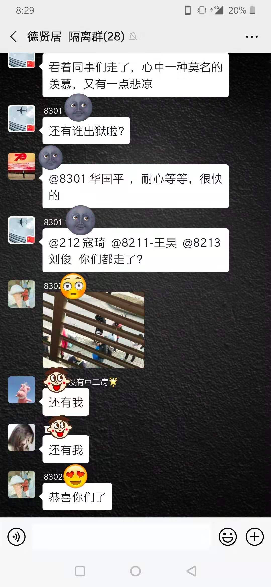
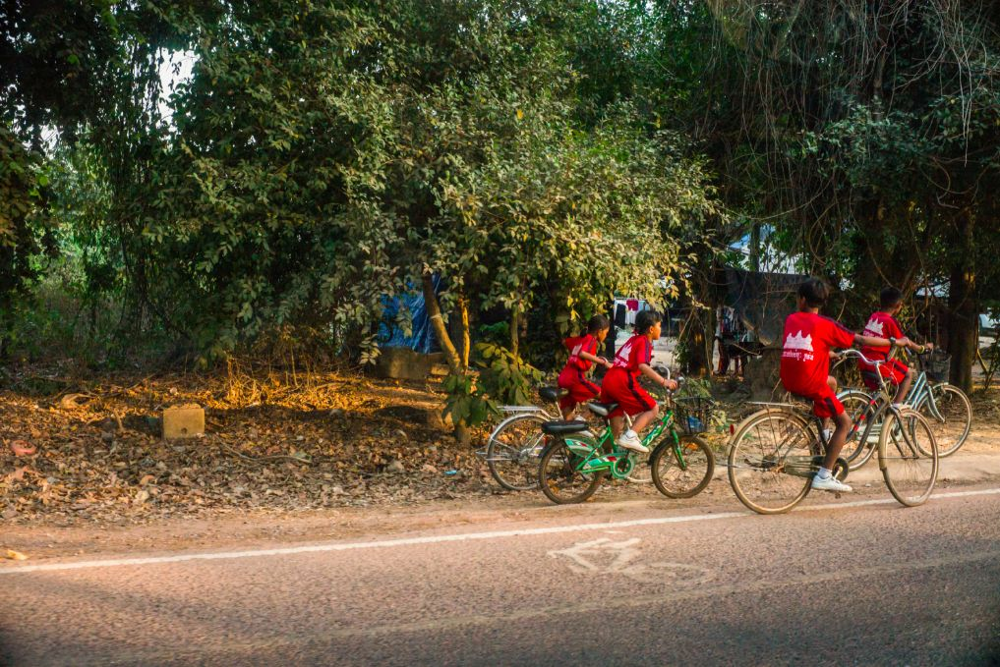

「 隔离日记 」 20200202
原文链接 备份链接 播放音乐 | 阅读效果更佳 感谢 | 您对霍超LEGAL的关注、阅读与分享 如今我每天蜗居在隔离房间里，都会定时看一些疫情相关的新闻，笑着看的时候看看看着就哭了；哭着看的时候，看着看着就笑 …
播放音乐 | 阅读效果更佳
感谢 | 您对霍超LEGAL的关注、阅读与分享
依据国务院2020年春节放假延长的通知，今天本应该是正式开始工作的日子，然而由于疫情的原因，全国多地的企业受地方政府的明确要求，只能继续暂停运转，使得这个年变得愈加漫长。而我虽然身处于隔离区，但线上工作并未受任何影响，远程的协同配合也并未感到太多的不便。事实上，这场未曾预见的疫情可能是即将到来的5G时代最好的催化剂，让产业互联网愈加迅速的在中国铺开、渗透到方方面面。
不得不说，有了工作之后，一天的时间立马过得飞快，不知不觉间天色都落入了漆黑，同时也是第一次觉得长假之后的第一天这么充实。
同时今天，疾控中心的医护人员也对我进行了第一次核酸检测，这说明我离离开隔离区的日子不远了，进来的时候，还和我说你这个房间位置不错啊，有这么大的落地窗，外面的街景相比对面的房间也很不错。

进行核酸试剂检测的医生，2020年2月3日

窗外运送盒饭进入隔离区的警察，2020年2月3日
因为先前负责隔离消杀的医护人员只是负责监管，对于每个隔离者的具体情况也并不清楚，所以与疾控中心的检测医生沟通下，在被隔离的第四天我终于明白了自己的具体情况：1、并非是要从入境之日（1月30日）起算起隔离14天，而是自接触之日（1月23日）算起14天；2、属于是集中隔离观察的“密切接触者”，也是以下四种情况里最轻的一种。
依据国家卫生健康委员会发布的《新型冠状病毒感染的肺炎诊疗方案试行第三版》的要求，连续两次呼吸道病原核酸检测阴性，采样间隔时间至少在一天以上，这样才可以解除隔离。
本土截取自《长江日报》微博
而我今天的检测结果一切正常，核酸检测阴性，，所以不出意外，再等一到两天就可以离开隔离区域，恢复自由了~~而当我领取晚饭时，终于有闲暇去再看“隔离群”的信息的时候发现，发现我们楼里，已经有一批集体出院，幸福地迈向了回家的路，恢复到原有的生活。

_旁边的房间的患者解除隔离，消杀处理他的所留用品，_2020年2月3日

“ 德贤居 隔离群 ”，为保护个人隐私，聊天截图有做部分处理
看这群里的调侃，依旧充满了欢乐，就像是一群终于放学回家的孩子们。
也希望我们每个人都能在疫情过后平安顺遂，阖家团聚。

_暹粒放学回家的孩子们，_2020年1月25日__
查看 往日
—End—
文 | 霍超
插曲 | 《No Fear in My Heart》- 朴树
封面插图 | 霍超
正文摄影 | 霍超
封底视频 | Every Leica has a Soul
长按二维码
关注 | 公众号

点 在看 留下你的印记
谢谢一路有你＼( ^▽^ )／
Huochao
谢谢支持！
长按二维码向我转账
谢谢支持！
受苹果公司新规定影响，微信 iOS 版的赞赏功能被关闭，可通过二维码转账支持公众号。
原文链接 备份链接 播放音乐 | 阅读效果更佳 感谢 | 您对霍超LEGAL的关注、阅读与分享 如今我每天蜗居在隔离房间里，都会定时看一些疫情相关的新闻，笑着看的时候看看看着就哭了；哭着看的时候，看着看着就笑 …
原文链接 备份链接 播放音乐 | 阅读效果更佳 感谢 | 您对霍超LEGAL的关注、阅读与分享 昨天，许多关心和关注我的人看到推送，给予我鼓励和安慰，收到祝福的消息太多，以至于一时让我有些手足无措，没能及时回复还望谅解，在此必须再说一句感 …
原文链接 备份链接 播放音乐 | 阅读效果更佳 感谢 | 您对霍超LEGAL的关注、阅读与分享 昨天飞机刚刚落地，手机开机给爸妈报了平安，人们开始涌动，起来从行李架上收拾东西，飞机上的广播突然响起，”乘坐本次航班的旅客 霍超先生，因为您先 …
原文链接 备份链接 先点击上方蓝字关注我喔~ 从我1月22号第一次出现症状开始，到今天是第12天，在2天前，我开始自行退烧了，咳嗽频率也大幅下降，算上今天，我已经退烧3天了，体温一直都在36.5左右，没有反复，至此，我想我已经战胜病毒了。 …
原文链接 备份链接 “我倒是不很担心自己，就有点担心做得不够好、或者给团队拖后腿，毕竟经验有限。” 全文2216字，阅读约需4分钟 1月30日凌晨3点，护士王皓脱下最后一层脚套，兜着已经发肿的手，离开武汉协和医院西院的隔离区。 1月27 …